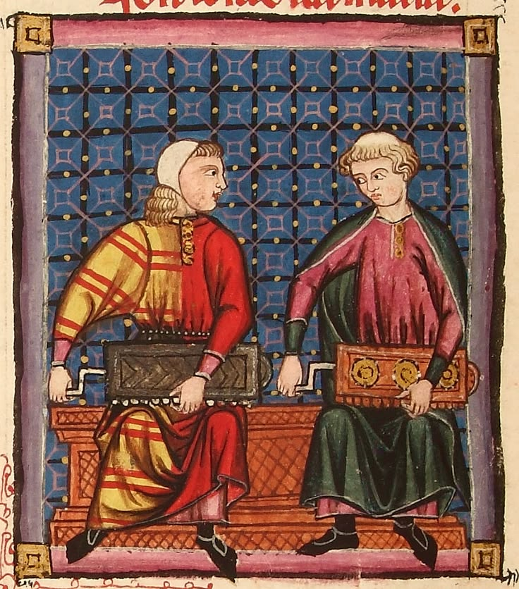
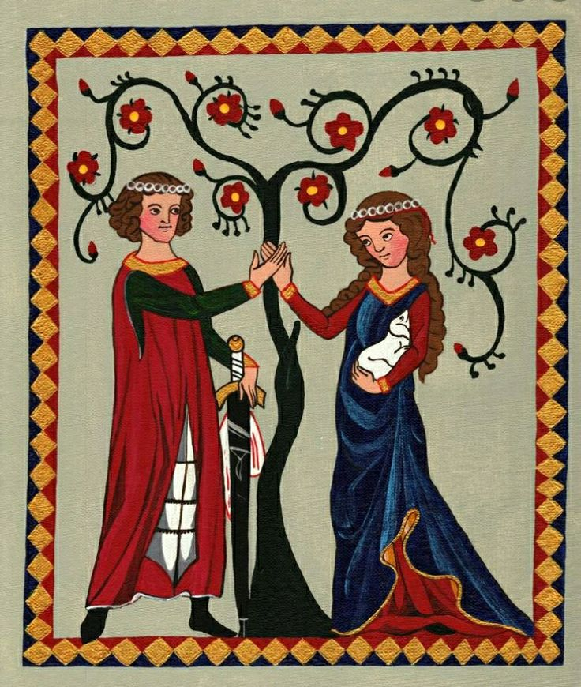
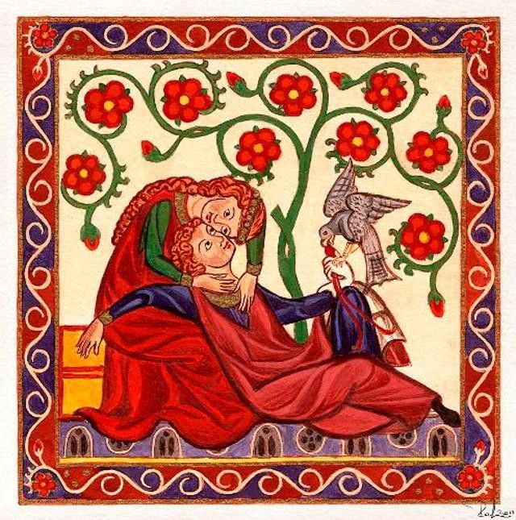
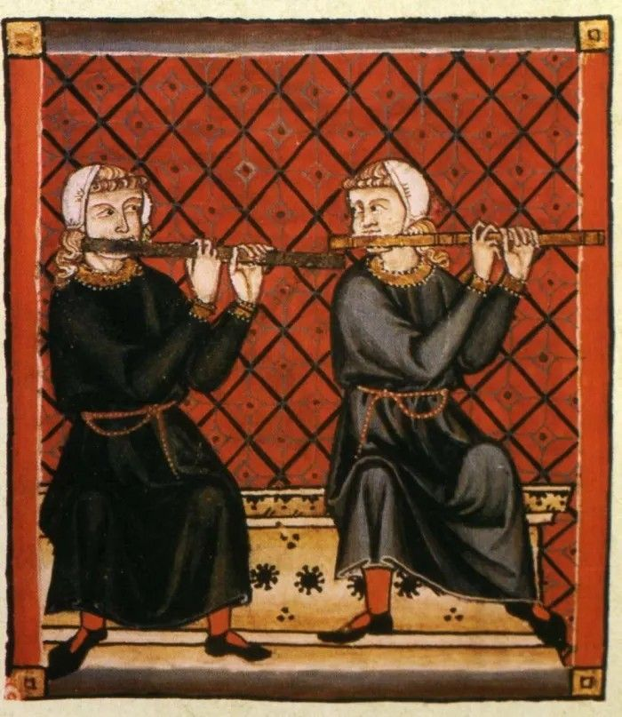
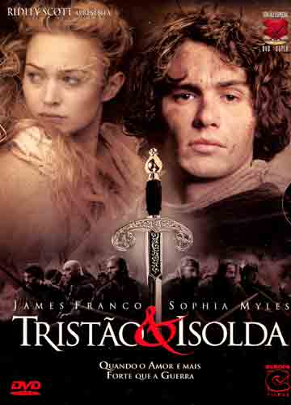
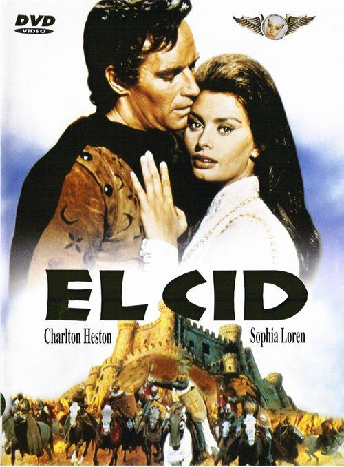
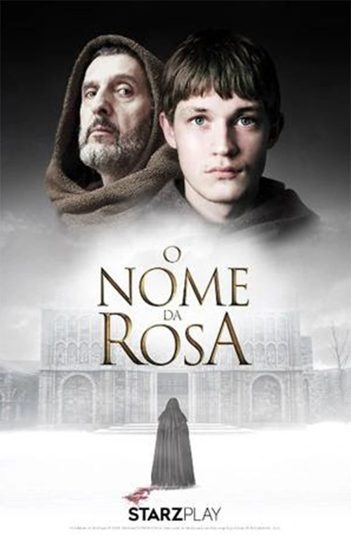

Cantiga de Escárnio
Paio Soares de Taveirós
O Trovadorismo foi a primeira manifestação literária da língua
galego-portuguesa e desenvolveu-se durante a Idade Média,
principalmente entre o final do século XII e meados do século XIV.
Na periodização tradicional da literatura portuguesa, seu marco
inicial é associado à Cantiga da Ribeirinha, também conhecida
como Cantiga da Garvaia, atribuída a Paio Soares de Taveirós.
Sua datação é discutida por estudiosos, sendo geralmente situada
entre 1189 e 1198. O movimento recebeu forte influência da poesia
provençal, originária do sul da França, mas desenvolveu formas
próprias de expressão na Península Ibérica.
Sua principal manifestação foi a produção de cantigas: poemas
compostos para serem cantados, frequentemente acompanhados por
instrumentos musicais. Essas composições abordavam sentimentos
amorosos, relações sociais, costumes e críticas a personagens
da época. A produção trovadoresca galego-portuguesa organizou-se
em três grandes gêneros profanos: cantigas de amor, cantigas de
amigo e cantigas de escárnio e maldizer. Também se destacaram
as cantigas religiosas, especialmente as Cantigas de Santa Maria,
associadas à figura de Afonso X.
Inicialmente transmitidas por apresentações e cópias avulsas,
muitas composições foram posteriormente reunidas em manuscritos
conhecidos como cancioneiros. Entre os principais registros
preservados estão o Cancioneiro da Ajuda, o Cancioneiro da
Biblioteca Nacional e o Cancioneiro da Vaticana. Esses documentos
são fundamentais para o conhecimento da literatura medieval
galego-portuguesa.
O Trovadorismo desenvolveu-se em um cenário de transformações
políticas na Península Ibérica, marcado pela formação e
consolidação dos reinos cristãos. Nesse período, a Reconquista
Cristã, processo de expansão dos territórios cristãos sobre
regiões sob domínio muçulmano, influenciava as disputas
territoriais, as alianças entre monarquias e a organização
militar da sociedade.
A estrutura política era fortemente influenciada pelo feudalismo,
sistema baseado na descentralização do poder e nas relações de
dependência entre senhores e vassalos. A nobreza possuía grande
influência política e militar, enquanto os reis buscavam ampliar
sua autoridade e consolidar seus territórios. As relações de
fidelidade e submissão próprias da organização feudal também
influenciaram a literatura: nas cantigas de amor, por exemplo,
o trovador apresenta-se como servidor de uma dama idealizada,
estabelecendo uma relação simbólica semelhante à vassalagem.
As cortes régias e senhoriais tornaram-se importantes centros
de produção e circulação cultural. Reis, nobres e membros da
aristocracia patrocinavam artistas e participavam de atividades
literárias e musicais. Um exemplo significativo foi D. Dinis,
rei de Portugal entre 1279 e 1325, que também se destacou como
trovador e contribuiu para o desenvolvimento da cultura
galego-portuguesa.
A sociedade medieval era predominantemente rural e organizada
em torno da economia agrária e das relações feudais. A terra
constituía a principal fonte de riqueza, e a produção agrícola
dependia, em grande parte, do trabalho dos camponeses e servos.
A organização social era hierarquizada, com destaque para
três grupos: o clero, responsável pelas atividades religiosas;
a nobreza, ligada à administração e à guerra; e os trabalhadores,
que sustentavam a economia por meio de suas atividades produtivas.
A Igreja Católica exercia influência expressiva sobre a educação,
a cultura, os valores morais e a organização da sociedade.
A visão teocêntrica, que colocava Deus no centro da existência,
orientava grande parte do pensamento medieval. Essa influência
também se manifestava na produção artística e literária,
especialmente nas composições de caráter religioso.
Nesse contexto, as cortes desempenhavam papel importante na
vida cultural. Os ambientes aristocráticos reuniam trovadores,
jograis e outros artistas responsáveis pela composição,
interpretação e divulgação das cantigas. Embora a produção
trovadoresca estivesse fortemente associada à nobreza, sua
circulação também alcançava outros espaços sociais por meio
de apresentações públicas e da atuação de artistas itinerantes.
As diferenças entre os grupos sociais aparecem na própria
literatura. As cantigas de amor refletem os códigos de
comportamento das cortes, enquanto as cantigas de amigo
apresentam situações relacionadas à vida afetiva e a
ambientes cotidianos. Já as cantigas satíricas revelam
conflitos, rivalidades e críticas aos costumes da sociedade
medieval.

Paio Soares de Taveirós

Dom Dinis

Martim Codax

João Garcia de Guilhade

2001 • Dir. Brian Helgeland

2006 • Dir. Kevin Reynolds

1961 • Dir. Anthony Mann

1986 • Dir. Jean-Jacques Annaud
A "Cantiga da Ribeirinha", também conhecida como "Cantiga da
Garvaia", é tradicionalmente apontada como um dos primeiros
textos literários conhecidos em língua galego-portuguesa.
Sua autoria é atribuída ao trovador Paio Soares de Taveirós,
e sua composição costuma ser situada entre 1189 e 1198,
embora a data exata seja discutida pelos pesquisadores.
Outra curiosidade é que as cantigas medievais não chegaram
até nós apenas por sua transmissão oral. Grande parte do
conhecimento atual sobre essa produção vem de manuscritos
organizados em cancioneiros. O Cancioneiro da Ajuda, por
exemplo, é um dos registros mais antigos preservados e
reúne principalmente cantigas de amor. Já os cancioneiros
da Biblioteca Nacional e da Vaticana conservam um conjunto
mais amplo de composições galego-portuguesas.